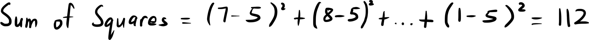
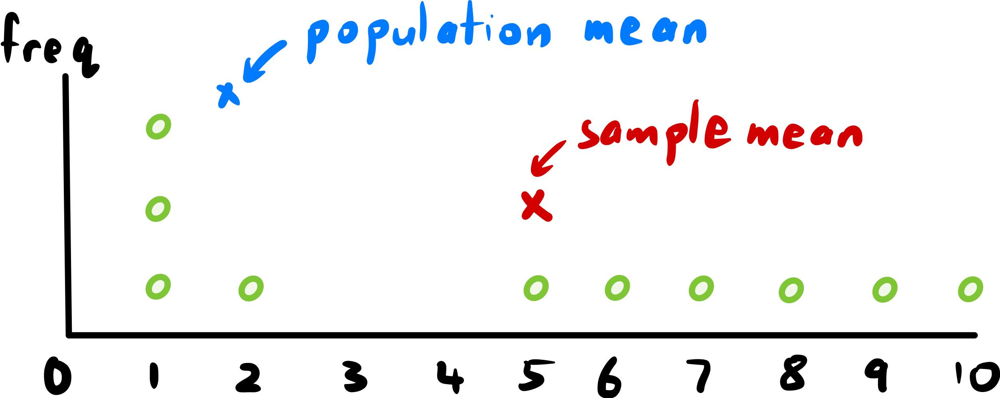
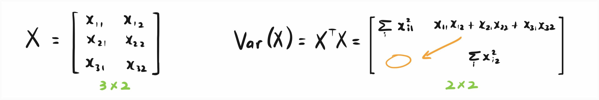
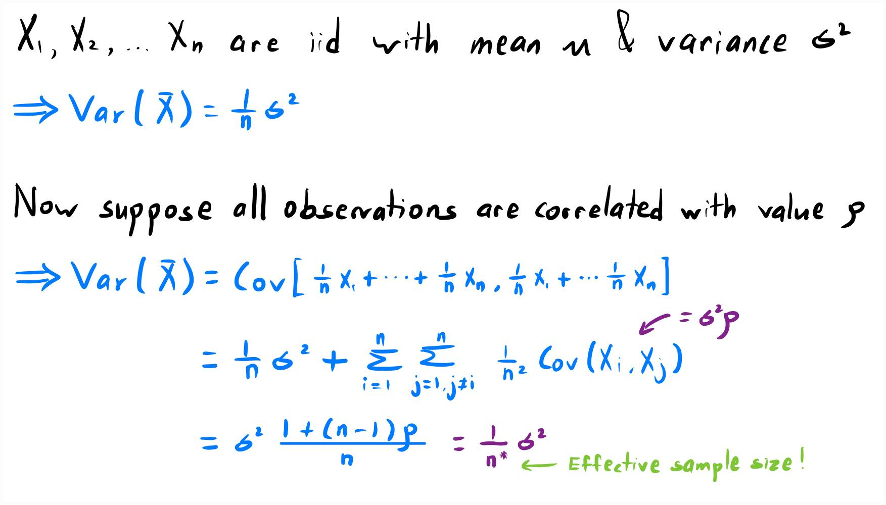
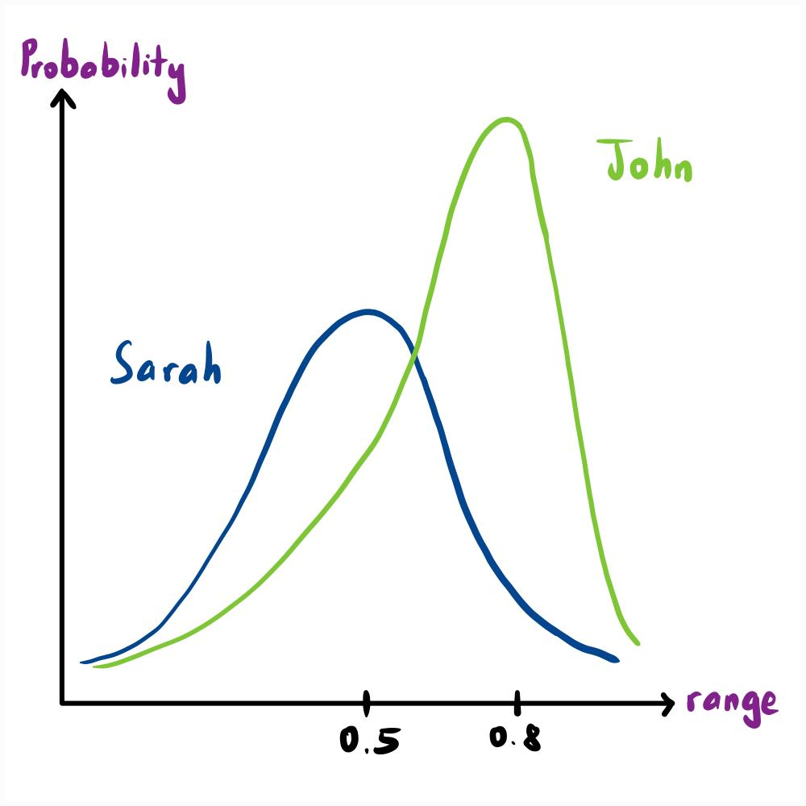

Pleasure to make your virtual acquaintance! I started this website to share interesting concepts in statistics, computing and mathematics. It was during my undergraduate studies when I realised being skillful in any of these subjects required mastery of the other two. The interdependence of each fascinates me, and it was that fascination paired with a hunger to show off their charms that led to the start of this project.
Outside of work and studies, I enjoy cooking, hiking and watching Netflix. While my blogs are mainly about statistical concepts, I do post about life in the UK from time to time. Read on to discover more about it from an Asian's perspective, and feel free to reach out for a cup of tea anytime!
Name
Aaron Khoo Ming Liang
Age
21
Career
DevOps Engineer, Barclays
Education
BSc Actuarial Science, LSE
Why Divide Sample Variance by n-1
It is well know that the formula to calculate variance of a sample dataset is the sum of squares divided by the sample size less one. I remember being asked by a friend: "Why minus one?" To my great shame as a statistics major, I could give neither a rigorous nor intuitive answer. This post serves to regain some lost pride and is aimed at those with a basic understanding of descriptive statistics.
We shall take an empirical approach, which is a fancy way of saying we work with observations rather than pure theory. Suppose we have a random generator of numbers from 1 to 10. We use it to generate 10 numbers and obtain the set (7 8 1 5 6 9 10 1 2 1).
Our goal is to describe this dataset with a single number. Let us take the average to obtain the sample mean = 5. The sample mean is called a statistic and is a measure of central tendency. In simple terms, it tells us where the center of the data is. Median and Mode are other statistics that measure central tendency.
Now suppose we want to measure dispersion, or how spread out the data is from the center. The sum of squared deviations from the sample mean is a good indicator of this and illustrated below.

The next logical step would be to average it out by dividing by 10. However, think about this for a moment. We would be introducing bias to our statistic!

If our data was represented on a number line, the sample mean would be in the center. Hence the sum of squares with respect to the sample mean would be the smallest possible sum, and this is possible to prove theoretically! If the true mean of our number generator is not 5, our sum of squares would be larger. We will be underestimating the variance if we divide the sum of squares by 10. We need to divide by a lesser value to compensate, and that value turns out to be one less the sample size. In our example, we need to divide by 9.
Sadly, I am not going to delve into why we divide by n-1 instead of say, n-2. Good resources such as Khan Academy explain it well from a theoretical point of view. An intuitive reasoning of this based on degrees of freedom, which I have found lacking in literature, is in the video below. Kudos for making it this far, and I hope you now have a rough idea on how to answer the title of this post.
Covariance Matrix of High Dimensional Data
As we trod down the path of statisticians, our datasets increase in both size and complexity. It is well enough analysing 10,000 rows of data, but what if we need to analyse billions of rows with 100,000 variables? This might seem implausible, but certainly not impossible given the exponential growth of data in the past decade. Dimensional reduction techniques such as Principal Component Analysis (PCA) are more important than ever. This blog aims to discuss the dimensions of covariance matrices corresponding to complex datasets as they play an important role in deriving the aforementioned algorithm and are often confusing in literature.
Consider a dataset with 3 observations and each of them 2-dimensional. This would be akin to 3 days spent recording the amount of rainfall and hours of sunshine. We represent the data in matrix form with column vectors corresponding to parameters (rainfall & sunshine), and row vectors corresponding to each observation (days). Suppose we know that the true mean (ie. population mean) of each variable is zero.

As a quick intepretation, the diagonal elements of the covariance matrix correspond to the variance of each column vector which are 1-dimensional datasets. The non-diagonal elements represent the covariance between the two column vectors and are equal. The calculation is quite standard and most texts find the convariance matrix by applying matrix multiplication on the transpose of X with X in that order. However, the only reason it is not the other way round is due to our choice of represention of the data! If the column vectors had corresponded to the observations and row vectors to parameters, the variance of the data matrix would instead be X multiplied by X transposed.
This might not seem like a big deal, but statisticians tend to represent single observations as column vectors. Suppose we have one observation with p parameters. On its own, this would be written as a column vector but if there were n observations, it would be a row vector in the matrix of all observations.
The image below shows this in the context of our example.
This has been the cause of much confusion during my undergraduate years. My advice is to remember that the dimensions of a covariance matrix is always the number of parameters in its dataset, not the number of observations. We are trying to measure the covariance between variables, not between observations. It seems trivial but when reading statistical theory, can cause a headache since it is all very abstract.
Effective Sample Size, Variance and Belief
A quick search of effective sample size exposes many resources which either define it mathematically or in a verbose manner. We state both approaches here and start with an independent and identically distributed (iid) sample where the true mean and variance are known. The effective sample size n* is defined as follows.

Now that is all well and good, but why did statisticians bother defining n* instead of leaving the coefficient of sigma squared as is? Turns out, n* represents the size of an iid sample that contains the same amount of precision as our dataset! Notice here, and in many other web resources, the use of "precision" instead of "information". To explain why the word precision is used, we need to dive into the nuances of variance and discover what it really represents.
Suppose you are asked how likely it will rain tomorrow. If you live in the UK, perhaps your answer would be 80% as you think it will rain more likely than not, but how would we explain this thought process mathematically? Human guesses can be modelled with the Beta distribution due to three characteristics. First, it is defined on the interval [0, 1] which represents the range of probability. Second, it can be skewed right or left depending on whether an event is likely or unlikely. Third, the variance can be increased or reduced depending on the strength of belief. To illustrate how variance ties with belief, consider the following example of Sarah and John. Sarah thinks the probability it will rain follows a Beta distribution with mean 0.5 and variance 0.5. John also assumes a Beta distribution but with mean 0.8 and variance 0.1. Anyone with an idea of variance can tell you that John is more precise (confident) about his guess than Sarah. The two distributions are illustrated to make this even clearer.

Thus, we can conclude that the word precise is used because n* represents the size of an iid sample that has the same variance as our dataset. That covers the basics of this intriguing topic, but I encourage you to think about correlation structures and their effect on the value of n*. For example, when correlation is constant and negative, the effective sample size may be larger than the original sample size! It is amazing that this is possible as intuitively, one might assume any correlation among our observations will lead to lower precision since the existence of correlation implies a linear pattern. However, this is not the case and most of the time correlation is not even constant!
All Blogs →
Derivation and Application of Principle Component Analysis
PCA is a dimensionality-reduction technique that maximises retained information in a dataset. We derive the algorithm assuming a known mean and variance before using it to compress a greyscale image. Future focus will be on estimation of the sample covariance matrix.